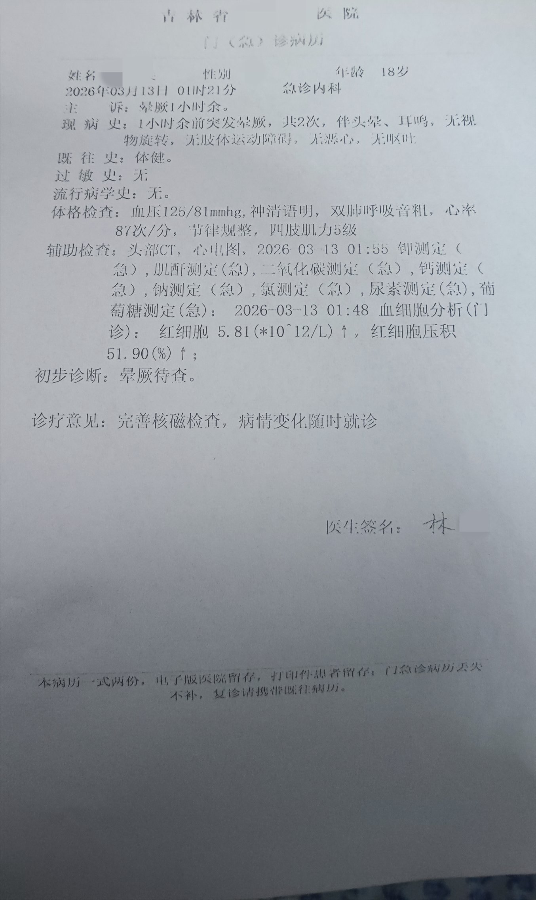

☯️🧬霊狐製作所 公式ツイッター
@Cheese_Ghostfox
推测原因:睡眠剥夺导致的交感神经紊乱，饮食导致的浓缩性脱水，安非他酮导致的利尿与多汗共同作用，最终造成体位性低血压与连续晕厥
狐建议大家一定要多喝水饮食清淡啊...
怎么也没想到会被「饭吃咸了」这种原因连续放倒两次
很荒谬的，第一次站起来走到厕所一下就倒了，再厕所躺了一会脑血供恢复就醒了，醒了起来往房间走没走两步又因为脑缺血被放倒了😂
然后就是躺地上不敢起来了，按照@grok 的急救建议四爪着地爬到水源猛灌了500ml，然后就地躺了10分钟才敢缓慢起身去医院...

☯️🧬霊狐製作所 公式ツイッター
@Cheese_Ghostfox
脱水这一块...
体位性低血压这一块...
😵 https://t.co/TTL05QtGjs